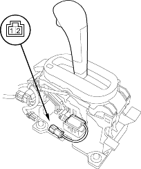

- Remove the driver's dashboard lower cover (see page 20-75).
- Remove the lower steering column cover.
- Turn the ignition switch ON (II) and measure the voltage between the No. 4 terminal (WHT/RED) of the steering lock assembly connector and body ground while pulling up on the shift lock lever. There should be battery voltage.
- If there is no battery voltage, go to step 4.
- If there is no battery voltage, disconnect the steering lock assembly connector. Check the BLK wire for continuity to ground. If there is no continuity to ground, repair the open in the BLK wire. If there is continuity to ground, replace the key interlock solenoid.
- Turn the ignition switch OFF.
- Remove the under-dash fuse/relay box and disconnect the multiplex control unit 8P connector.
- Check for continuity on the WHT/RED wire between the No. 4 terminal of the steering lock assembly connector and the No. 1 terminal of the multiplex control unit 8P connector. There should be continuity.
- If there is continuity, go to step 7.
- If there is no continuity, repair the open in the WHT/RED wire.
- Check for continuity between the WHT/RED wire and body ground. There should be no continuity.
- If there is continuity, go to step 8.
- If there is continuity, repair the short in the WHT/RED wire.
- Test the park pin switch (see page 14-170).
- If the park pin switch is OK, inspect the related multiplex control unit(under-dash fuse/relay box) connectors. If they are OK, substitute a known-good multiplex control unit and recheck.
- If the park pin switch is faulty, replace it.
- Remove the centre console panel and centre console (see page 20-73).
- Disconnect the shift lock solenoid connector (2P).

- Connect the No. 1 terminal of the shift lock solenoid connector (2P) to the battery positive terminal and connect the No. 2 terminal to the battery negative terminal.
- Check that the shift lever can be moved from the
 position. Release the battery terminals from the shift lock solenoid connector. Move the shift lever back to the position and make sure it locks.
position. Release the battery terminals from the shift lock solenoid connector. Move the shift lever back to the position and make sure it locks.
NOTE: Do not connect power to the No. 2 terminal (reverse polarity) or you will damage the diode inside the solenoid. - Check that the shift lock releases when the shift lock release is pushed and check that it locks when the shift lock release is released.
- If the shift lock solenoid does not work properly, replace it.